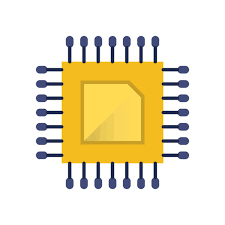
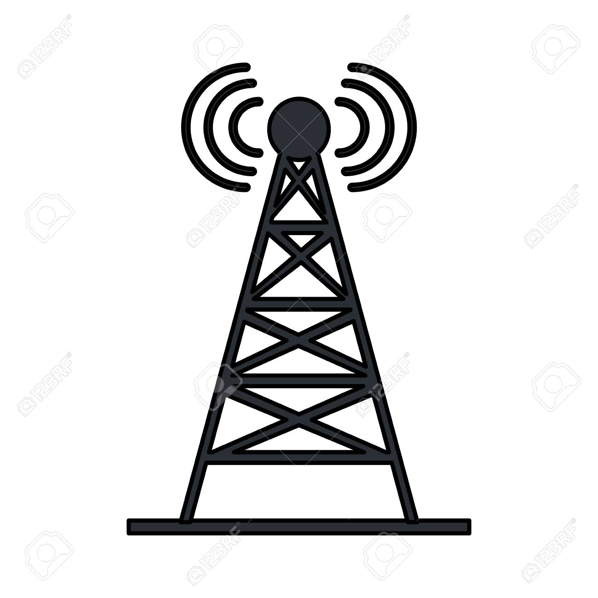
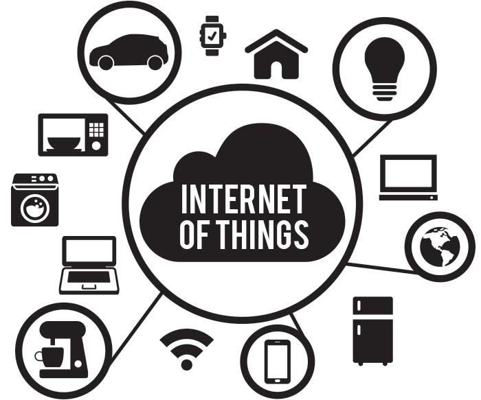

Education
Faculté des sciences de Monastir:


License en électronique, électrotechnique et automatique
Savoir le fonctionement des différentes systémes électroniques, programmer des microcontroleur, fabriquer des cartes électronique PCB et résoudre des problèmes mathématique.

étude de différents types de réseaux de télécommunications, développement web et création de systèmes d'intelligence artificielle
Master en télécommunications
étude de différents types de réseaux de télécommunications, développement web et création de systèmes d'intelligence artificielle
L'École supérieure privée d'ingénierie et de technologie
Ingénierie en systèmes Internet of things

étude de nouvel système de technologie qui est reconnu par le terme internet des objets